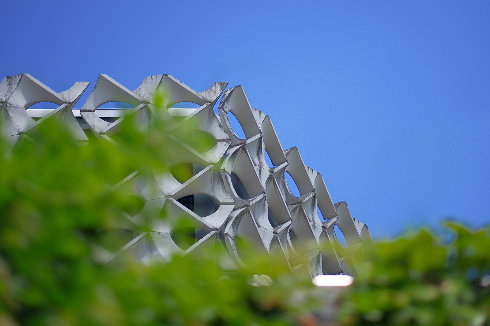
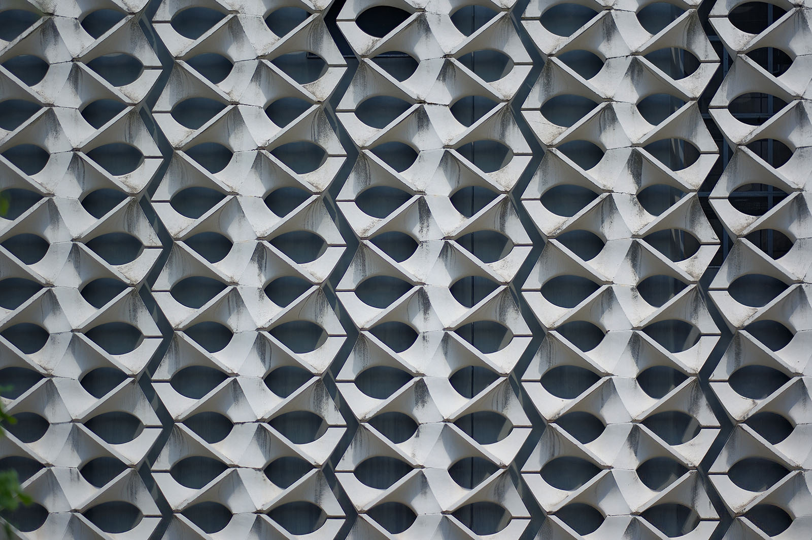
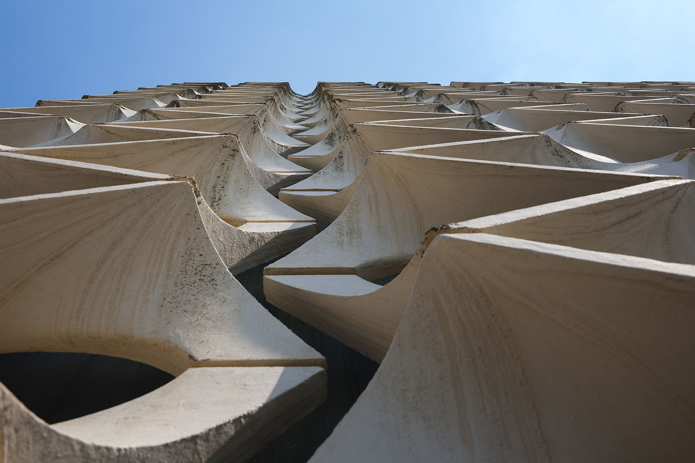
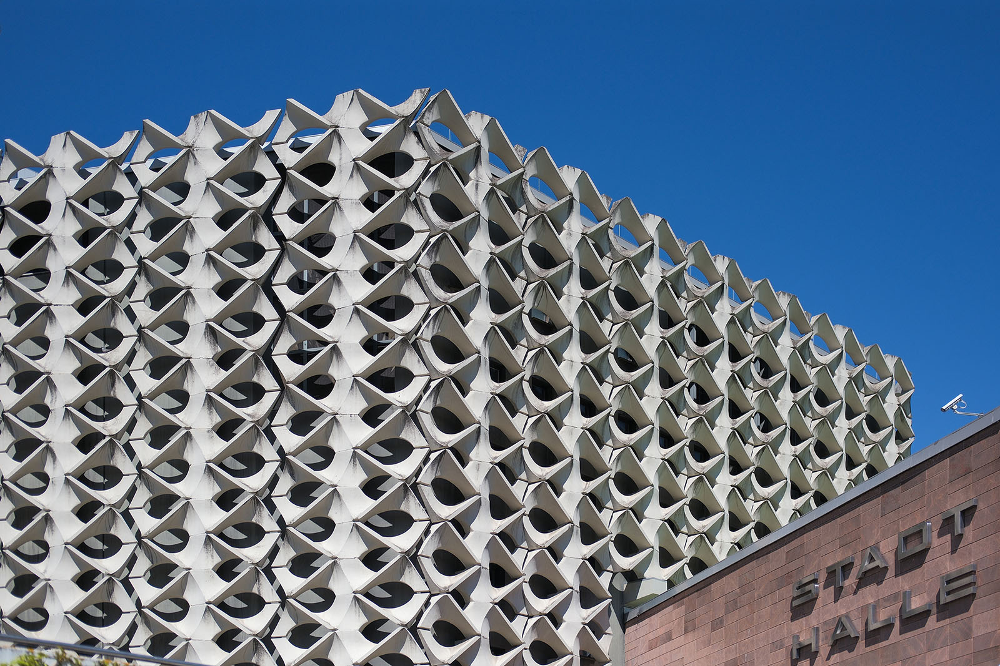

Recherche und Werkbeschreibung: Roman Pilz. Text und Fotografien wechseln sich wie in einem Magazin ab. Ein Klick auf ein Bild öffnet die Großansicht.
Bevor Chemnitz 2025 Kulturhauptstadt Europas wurde, nannte es sich "Stadt der Moderne" – neben der klassischen Moderne ist damit verstärkt auch die "DDR-Moderne" bzw. die "Ostmoderne" mitgedacht. Letztere hat gerade in Zeiten von bildzentrierter Kommunikation über soziale Medien eine bemerkenswerte neue Wertschätzung erfahren. Blogs, Feeds und digitale Kunst würdigen mit dem Enthusiasmus des Entdeckers die Aufgeräumtheit der Formen, die gestalterische Freiheit neuer Möglichkeiten durch fortschrittliche Baustoffe und technische Verfahren sowie nicht zuletzt den transnationalen Gleichklang einer hauptsächlich abstrakten, universell verständlichen Formensprache.
Kein Wunder also, dass die Stadthalle Chemnitz als "Wahrzeichen der Stadt" mit ihrer "ikonischen Formsteinfassade" prominent als Emblem auf Souvenirs für die Kulturhauptstadt 2025 werben durfte. Hubert Schiefelbeins Entwurf für die Fassadengestaltung der Stadthalle wurde als stilisiertes Muster auf T-Shirts, Stoffbeutel und Trinkflaschen gedruckt. Und auch seine durchbruchplastische Gestaltung des zentralen Treppenhauses am ehemaligen RAWEMA-Haus, gegenüber der Stadthalle, hat es zum Bildmotiv gebracht. Ein klares Zeichen, dass seine in den 1960er Jahren entwickelte Formensprache über die Zeiten Bestand hat.
Hubert Schiefelbein wurde 1930 in Falkenburg (heute Złocieniec, Polen) geboren. Schiefelbein machte von 1948 bis 1950 eine Ausbildung als Bau- und Möbeltischler in Greifswald. Anschließend studierte er von 1950 bis 1953 technische Gestaltung an der neu eingerichteten Fachschule für angewandte Kunst Wismar.
Zuletzt studierte Schiefelbein von 1953 bis 1958 an der Hochschule für bildende und angewandte Kunst in Berlin-Weißensee Plastik bei Heinrich Drake (1903-1994) und schloss dies mit Diplom ab. Bevor Hubert Schiefelbein 1965 als Dozent für Bauplastik an der Hochschule für Architektur und Bauwesen in Weimar angestellt wurde, arbeitete er als freischaffender Bildhauer in Berlin. Als Mitarbeiter von Waldemar Grzimek (1918-1984) arbeitete er von 1961 bis 1964 auch an der künstlerischen Gestaltung des Kino International in Berlin mit.
In Weimar trat Schiefelbein die Nachfolge des Bildhauers Siegfried Tschierschky (1898-1965) an, der als Wegbereiter durchbruchplastischer Wände in Architekturfassaden gilt. In Lehre und Forschung setzte er sein Wirken fort. 1969 wurde er zum Professor für bildende und architekturbezogene Kunst an der Hochschule für Architektur und Bauwesen Weimar berufen.
Er hatte diese einzige Professur im Schnittbereich von Kunst und Architektur in der DDR bis 1992 inne. Seit 1994 lebt und arbeitet der Künstler in Neubukow, Mecklenburg-Vorpommern.
Offenes Prinzip
Betonformsteine von Hubert Schiefelbein für die Fassade der Stadthalle (1974)
Das RAWEMA-Haus, das Schiefelbein noch zusammen mit seinem Vorgänger als Professor an der Hochschule für Architektur in Weimar, Siegfried Tschierschky, entworfen hatte, war quasi Schiefelbeins erste Visitenkarte in Karl-Marx-Stadt. Als repräsentatives "Haus der Industrieverwaltungen" errichtet, brachte es den Wiederaufbau an der Straße der Nationen einen wichtigen Schritt vorwärts und wurde nach seiner Fertigstellung 1969 mit dem 1. Preis im Wettbewerb der Zeitschrift "deutsche architektur" ausgezeichnet. Auch nach seiner Fassadenrenovierung in jüngerer Zeit bleibt Schiefelbeins abstrakte Fassade Aushängeschild des Gebäudes, das nachts sogar mit einer bunten Ausleuchtung besonders akzentuiert wird.
Für Rudolf Weißer, den verantwortlichen Chef-Architekten beim Bau der Stadthalle von 1969 bis 1974, war es also naheliegend, den mittlerweile selbst als Professor in Weimar tätigen Bildhauer und Gestalter Hubert Schiefelbein bei der Aufgabe der Fassadengestaltung mit einzubeziehen. Das jahrelang geplante Bauensemble im Zentrum der Stadt war von besonderer politischer, gesellschaftlicher und gestalterischer Bedeutung – es sollte den feierlichen Schlussstein der Stadterneuerung im Sozialismus bilden. Weißer war es dabei besonders wichtig, die Architektur ganz auf menschliche Bedürfnisse der Bürger und lokale Bedingungen hin auszurichten – Monotonie und "kalte Abstraktion"
lehnte er ab. Vielfalt in den Funktionen und der Gestaltung des Bauwerks entsprach dabei der Vielfalt der menschlichen Bedürfnisse. Das Aufbrechen und Gliedern des großen Gebäudes in kleinteiligere Formen und die abwechslungsreiche Gestaltung der Innen- und Außenflächen sind ganz auf Nähe und Resonanz bei der Bevölkerung orientiert. Dazu sollten neben Ingenieuren und Technikern auch Kunsthandwerker und Künstler als inspirierte Vermittler dieser Bedürfnisse wesentlich in die Projektierung des Baus mit einbezogen werden.
Hubert Schiefelbein entwarf zur Verhüllung des massiven Baukörpers für die Bühne des Großen Saals in Weimar zwei spiegelsymmetrische Formsteinelemente, die mittels Matrizen seriell in Beton gegossen wurden. Die Grundform der zwei sich in vertikaler Schichtung abwechselnden, länglichen Kunststeine sind zwei an einer Schnittstelle verbundene Parallelogramme, deren Längskanten von korrespondierenden Ovalsegmenten durchbrochen sind. Entlang aller Kanten hebt sich die Grundfläche geschwungen zu einem dreidimensionalen Relief, das in der Höhe jeweils von einer stegartig ausgeformten geraden Diagonalen als höchster Fläche gegliedert wird.
Immer zwei Steine bilden zusammen eine ovale Öffnung zum Baukörper. Alle Steine werden vertikal, säulenartig übereinander gestapelt, so dass nur im Zentrum der Einzelsteine eine Kontaktfläche mit geschlossener Fuge entsteht, an der das Gewicht nach unten abgeleitet wird – rückseitig werden die Steine ebenfalls nur punktuell mit dem Bauwerk verbunden, so dass der Raum um die Steine im Wesentlichen licht und frei bleibt.

Im Zusammenspiel der Teilflächen werden auch die Schattenfugen zum Gestaltungsmittel: Im stumpfwinkligen Zickzack laufen sie zwischen den einzelnen Steinsäulen von oben nach unten und bilden so den Gegenpart zu den diagonalen Stegen der Steine, die parallel in leicht spitzwinkligem Zickzack mitlaufen. Schiefelbein realisiert hier sein durchbruchplastisches Leitbild, das der diagonalen gegenüber der rechtwinkligen Ordnung den Vorzug gibt, und erzielt zusammen mit den organisch gerundeten, eiförmigen Öffnungen, die ebenfalls in ihrer Achse schräg zur Hinterwand ausgerichtet sind, eine wundervolle ornamentale Wirkung.
Das große sechseckige Volumen des monolithischen, vor Ort in Beton gegossenen Bühnentrums überragt zwar die mehrfach terrassierten, alle auf einem Dreiecksraster angeordneten Teilbereiche der Stadthalle wesentlich, wirkt aber durch die Vorsatzschale der hell gefärbten Betonformsteine leicht und alles andere als monoton. Auf den gewölbten Flächen der Steine spielen Licht und Schatten je nach Wetter und Tageszeit.
Zusammen mit den übrigen Fassadenflächen und -materialien – dem regionalen Porphyrtuff, Glas und Metall – gibt die Fassadengestaltung dem Gebäude seinen besonderen Wiedererkennungswert. Schiefelbein entwickelte später auch Muster für kleinere Betonformsteine, die dann auch in Serienproduktion gingen und auf dem gesamten Gebiet der DDR verbaut wurden – die großen bauplastischen Steine für Karl-Marx-Stadt sind allerdings nur hier erlebbar.
Wer dennoch ein Beispiel seiner für das WBK Erfurt entwickelten Formsteine in Chemnitz sehen will, kann in das ehemalige Baugebiet "Fritz Heckert" fahren. Seine sogenannte "Kreuzkehre" ist dort als Freimauer im Verbund mit Kunstwerken in Emaille von Lutz Voigtmann, Thomas Ranft, Heinz Plank, Michael Morgner und Uwe Bösch am Fußgängerboulevard neben der Albert-Schweitzer-Oberschule an der Bruno-Granz-Straße (Markersdorf) zu bewundern.
Hubert Schiefelbein wurde 1930 in Falkenburg (heute Złocieniec, Polen) geboren. Schiefelbein machte von 1948 bis 1950 eine Ausbildung als Bau- und Möbeltischler in Greifswald. Anschließend studierte er von 1950 bis 1953 technische Gestaltung an der neu eingerichteten Fachschule für angewandte Kunst Wismar.

Zuletzt studierte Schiefelbein von 1953 bis 1958 an der Hochschule für bildende und angewandte Kunst in Berlin-Weißensee Plastik bei Heinrich Drake (1903-1994) und schloss dies mit Diplom ab. Bevor Hubert Schiefelbein 1965 als Dozent für Bauplastik an der Hochschule für Architektur und Bauwesen in Weimar angestellt wurde, arbeitete er als freischaffender Bildhauer in Berlin. Als Mitarbeiter von Waldemar Grzimek (1918-1984) arbeitete er von 1961 bis 1964 auch an der künstlerischen Gestaltung des Kino International in Berlin mit.
In Weimar trat Schiefelbein die Nachfolge des Bildhauers Siegfried Tschierschky (1898-1965) an, der als Wegbereiter durchbruchplastischer Wände in Architekturfassaden gilt. In Lehre und Forschung setzte er sein Wirken fort. 1969 wurde er zum Professor für bildende und architekturbezogene Kunst an der Hochschule für Architektur und Bauwesen Weimar berufen.
Er hatte diese einzige Professur im Schnittbereich von Kunst und Architektur in der DDR bis 1992 inne. Seit 1994 lebt und arbeitet der Künstler in Neubukow, Mecklenburg-Vorpommern.

Offenes Prinzip
Betonformsteine von Hubert Schiefelbein für die Fassade der Stadthalle (1974)
